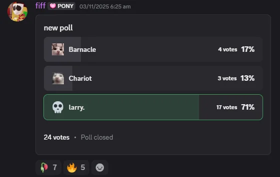

P4SS Time Guide
Last Updated 6/17/26
BASICS
CALL OUTS
Even if maps may differ from eachother the general lay out is consistent. The gold standard for map design currently
is the original, pass_arena2. All maps are symmetrical, so the call outs for
one side are the same for the other.
Note: Whether or not a call out is left/right depends on the perspective of
your goal. For example, if you're facing your own side, the Fence to YOUR left is "right Fence"
Hover over images to see which map it is. Hover over videos to play, and click to fullscreen.
Goal Side

Goal
- This is the Goal. If you throw the jack into the enemy Goal you get 1 score, and vice versa.
Goal Ramp
- A common structure on many maps, these are ramps on the side of the Goals that Demo players can trimp on.Gay/Pride
- A very steep ramp above the Goal. Some maps have larger Gays than others, and some allow you to pixel walk along the top. Very useful cherrypicking spot for any class.Left/Right Corner
- Small pockets to the side of each goal which usually has Pults in the corners. Usually the ball is thrown loosely here because it is hard to for the enemy team to get the ball and come back alive from such cramped spaces.Left/Right Ground
- The ground infront of spawn doors to the left and right of goal.Left/Right Fence
- Structures in front of the goal that act as cover and are used for jumping and/or trimping. Gives you highground for spamming on defenders or for spamming offensive players on the ground. Some maps have two fences while some only have one or none.Shelf Side

Left/Right Shelf
- Long elevated portions of the map on each side that span from one team's side to the other. Usually flat, but there are maps replace shelf with surfable ramps.

Upper/Top Left/Right
- Long surfable ramps above shelf. Used in pretty much every rollout.High Left/Right
- The sky above the ramps and/or a second higher ramp. On maps without a second pair of ramps, this is called out after a player jumps/cabers the surf ramp and are in the air and not surfing on the ramp or did a sync jump.
Middle

Upper/Top (mid)
- A large platform in the middle of the map. The jack spawners are usually above and/or below this platform. During set-up, it's important to take space on this platform to contest for ball possession.Lower (mid)
- The ground under the platform. Usually indented and have slopes that demomen and soldiers can ramp slide on. A lower ball spawner is usually right in the middle, so it's important to take space here during set-up to contest for ball possession.
Goblin
- A small crawlspace on each side of mid. Very funny, not very useful.Lower Left/Right (Demothing)
- This is usually connected to shelf and mid. This usually has a shallow ramp and a steep ramp that are used in a move called a "Demothing".Left/Right Dark
- Dark covered areas under shelf that normally have small health packs. Sometimes has a surfable ramp. Really easy to get spammed from shelf, so you might die if the enemy is paying attention.High/Space

Left/Right Ultra
- Tall pillars on each side that have sloped tops that you can pixel walk on. Essential for some bombs and rollouts. Some maps don't have ultras, but the ones that do usually have them in the same spot.Leaf
- Small platforms that surround the dropper spawn. Depending on the map, leaf allows rockets to hit it and splash the ball, which allows the ball to be pushed and pulled.
Left/Right Galactic
- Long beams that span from the side walls to the dropper spawn that you can usually walk on. Elite cherrypicking spot.Space/Skybox
- All the empty space above the map.BASIC GAME GUIDE
written by EngiKnight
A written guide on the regular strategies for each main game state: Set-up, Offense, and Defense.
Set-up
Set-up is the 10 seconds of time before the ball spawns every round.
When the round starts, everyone should get overhealed/buffed before everyone is allowed to move. Ideally a Soldier should switch to medic with
the stock medigun to give the Demo overheal for the mid fights, but it's not a big deal if a Demo switches instead.
When everyone rolls out to mid to contest for the ball, the main goal is to make space so the opposite team doesn't get the ball before
your team does. Avoid dying, because this gives the enemy team a numbers advantage. If you're low on health, try sacrificing your life for
an opponents life.
For Soldiers on upper mid, you'll mostly be fighting other soldiers. Try to scare them off upper mid or kill them.
For Demos on lower mid, you'll usually want to match whatever the other demo is doing. If they have their caber out,
they're likely going for a Caber Extender to steal the ball. This is referred to as a ditto.
For Medics on lower mid, let your opponent pick up the ball first and use your faster walk speed to catch up and steal
it from them.
If you have a Demo-Med team comp then your Medic should pocket the Demo
OFFENSE
After you gain ball possession after a defense or set-up, its best to pass to a teammate on your goal side to prepare for an offense.
Offense can start anytime, but an offensive push after Set-up starts with either a Soldier or a Demo rolling out on upper left/right, depending
on whichever is free from enemy players.
Your team then rolls out behind them one by one, each taking a turns doing a bomb, which is just a series of jumps to bring them closer to scoring as the ball follows behind.
Rolling out together makes passes predictable and leaves your goal defenseless in the case they get the ball and push immediately, so its best to rollout one by one.
Also, dont interfere with whatever bomb of move your ball holder is doing. This increases the chance of your team losing posession and failing the offense. Like if your demo accidentally steals a pencil dribble or a soldier does a bonsteal.
It's important to take advantage of as much space as possible. This means positioning yourself further from your teammates when waiting for a pass like on the opposite shelf or on mid. It's the same reasoning with why you shouldn't roll out together.
Not everyone has to wait though. Even if this isn't a DM reliant gamemode, DM can still be used to your advantage. Having one soldier/demo (and a medic if you have one) shoot at enemy defenders while your team passes the ball increases the amount of things their defenders has to keep track of and forces them to prioritize one of them momentarily.
You force them to either focus you to survive but ignore the goal for a few seconds, or let you deal a ton of free damage to them while they spend their own health rocket jumping to block the goal.
DEFENSE
This is Moose's Defense Guide. This'll give you the basics of defense philosophy in 4v4 PASS Time.
SOLDIER GUIDE
written by Gibus Spy (gears4343)
Soldier is the workhorse of the team with the ability to quickly switch between offensive and defensive roles with his decent damage and high mobility (rocket jumping) allowing him to rapidly reposition across the map. Soldier is the only class capable of providing consistent defence to your team's goal during an attack, as such, if your team is lacking in defence it is your job to fill in that gap.
Offense
On offense soldier can perform various self bombs in order to move the ball from your hands into the enemy goal. When bombing in with the ball, its important to take note of how many enemy defenders there are on their goal. The more defenders, the less likely your bomb will be successful which can result in your team losing possession of the ball. Defenders have many measures of preventing your bomb, including outright killing you during the bomb. If you see an enemy moving in to prevent your bomb you should pass to a teammate to maintain ball control and continue the offensive elsewhere or try to make distance while continuing your bomb.
When starting an offensive its important to be in a good position to quickly carry out your bomb. Staying nearby to shelf or floor in order to jump to the top ramps leaves you open to carry out an offensive and moves the ball around, making it harder for your opponents to kill your ball carrier. Staying away from enemy soldiers and making sure you are open and ready to perform a bomb with full rockets and enough health is the key to performing a successful bomb and not losing ball control.
Defense
When the enemy has ball control its important to have sufficient defence, if you see that a friendly soldier is already helping to defend your goal you can choose to take alternative decisions. These include, killing the person bombing in, killing those in offensive positions to limit their options for passing, or going in for an intercept. However, if your goal lacks defence (1 or 2 soldiers) you should jump back as fast as you can while maintaining at least 1 rocket to defend from the enemy bomb.
Whenever the enemy has ball control and has players in offensive positions you should take defensive positions. This means staying near to your side of the map to maintain the option of quickly jumping back if they begin an attack. However, if the enemy has ball control but no players in offensive positions, such as if they died, then its possible to roll out and bomb into the enemy ball carrier in order to fight for possession of the ball and make starting an attack harder. Its important to always have 1 player near or at the goal in order to defend if the enemy team does start a bomb. Going in for the ball when the enemy has it is referred as "chasing" and shoud be commed to your team.
Assessing the Game State
Assessing the game state is the best method for determining whether to go on the defensive or offensive before committing too much into either category. The bar on the bottom of your screen allows you to monitor the map wide status of the game, such as who has the ball and where it is. Looking at the top of your screen will allow you to see how many enemies or teammates are still alive or have spawned. When in a defence team fight for ball possession (such as the ball being thrown in corner and the enemy team chasing) you should always jump back to assist in killing the enemy team in order to maintain ball control. For example, if your on mid and your ball carrier is getting jumped, jump back to help in the defence.
Examples of game states would be:
- Having ball possession
- Having ball possession but no offensive positions to pass to
- Enemy having ball possession
- Enemy having ball possession but no offensive positions to pass to
- Defence team fight for ball possession
- Offensive team fight for ball possession
The game state can transition from offense to defence quickly so reading what your teammate's status (alive, dead, low, full) is important. If the enemy has ball possession but no passes your team can chase and begin an offensive team fight for ball possession. If all your teammates die during the team fight your goal will be left open for the spawning enemies to bomb in. As such, ensure your entire team isn't chasing and ensure someone is on defence. If part of the chase, read your teammate's health and how close the enemy ball carrier is to dying. If the fight is going to be unsuccessful its usually best to killbind to resupply and help the defence. Similarly, if the enemy fails a offensive team fight for your ball it leaves multiple players dead, reducing their defensive ability and allowing your team an easier offensive.
Positioning
Positioning can be put into different labels, offensive positioning, defensive positioning and neutral positioning. Neutral positioning includes things like staying on mid or middle shelf when the enemy team has the ball but has not begun an offensive. This allows you to remain flexible before committing to any specific role and sets you up for going offensive (chasing the ball and fighting the enemy team) or defensive (intercepting on top left/right or jumping back to goal).
Neutral positioning should allow easy positioning to jump back or health packs, also enabling soldiers to chase the ball if its loose to gain possession. Offensive positioning typically involves roll outs or being forward. Roll outs come in many different ways, top roll outs (top left/right), low roll outs (low left/mid/right), or high roll outs (sync roll outs). This lets you quickly bring the ball from your side to the enemy goal. "playing forward" usually refers to being on the enemy side of the map, such as their floor. corner, of enemy side of shelf. On defence, forward players should be targeted and killed while maintaining goal defence in order to prevent enemy passes from continuing the offensive.
General Tips
- If you have the ball (either from chasing or getting loose ball) and no passes, you should start a self bomb. If a self bomb is not possible or has failed, leaving you out of position on the enemy side without passes, you should throw the ball back to your side of the map (throwing back) to try and maintain ball possession. Passing is the best way to continue an offensive, if your out of rockets or health then pass to a teammate in a better position.
-
A handoff refers to throwing the ball for your teammate to catch without locking onto them. Handoffs vary but are all built around that
general purpose. Common handoffs include throwing to top left/right if your throw can reach there in order for a player rolling out to
catch it and bomb in. Handoffs make it harder for the enemy to intercept the ball when passing
and looks cool.
-
Standard handoff
Just throwing it for them to catch loose
-
Chinese
Kill binding with the ball, causing the ball to bounce above you
-
Japanese
kill binding with the ball following you for your teammate to catch
-
Korean
Teammate catching the ball while its still magneted onto you
-
Standard handoff
DEMOMAN GUIDE
written by Evilyn
Pipes Guide
Stoic Guide
MEDIC GUIDE
written by EngiKnight
put stock medic guide
VSH Climb
On the Asia PASS Time Association's dedicated server, Medic is able to use the same melee climb from the
Versus Saxton Hale gamemode from base TF2. For the rest of this guide, the P4SS Time VSH Climb will be referred to
as the Medic Climb to distinguish it from the regular TF2 VSH Climb
You can medic climb on any surface, meaning you can climb on the ground. This means you can replicate a lot of the moves
Soldier and Demo with the Medic Climb, like the rebound dribble and the pencil dribble
The ground medic climb is really useful since you don't need to be near a wall to gain height. The amount of height you gain is affected
by whether or not you're crouching, just like the explosive jumps of Soldier and Demo
If you crouch jump right before medic climbing, you can go even higher. This is possible because of the longer range of the medic climb,
so there is a period of time after you crouch jump where you're still able to hit the ground
You're able to chain up to 5 medic climbs in a row, each costing 25 health, but they effectively cost lesser because of self heal. The height
you gain is enough to give fall damage though, so be weary of that. (in the clip, I regain my health when I take fall damage because of a server plugin,
this wont happen in a real game)
If your health is below that 25 hp threshold, the plugin wont let you medic climb.
Larry (QuickFix Medic)
APTA has also unbanned the QuickFix, balancing it by nerfing its overheal and removing its ubercharge. Even
though ubercharge is very rarely used, the QuickFix uber is broken in P4SS Time because the patient can still pick up the ball unlike
stock uber. It's overheal was nerfed by increasing it's decay, meaning it goes away faster.
When you use the QuickFix, your playstyle as medic switches from an overhealing demon to even more of a rat than regular medic. This
is called the Larry loadout. You might see some other names thrown around (Barnacle & Chariot) which
were alternative names that were given when the QuickFix was being tested.

The QuickFix and VSH Climb can be used to gain a ton of momentum. This can be used to quickly roll out with your team.
ROLL OUTS
This section will showcase common rollouts for each class and when they are usually seen. Rollouts are not required, but they can be very useful for getting to mid faster and contesting the ball spawns.
Note: The Larry/QuickFix Medic rollout is Asia-specific due to the quickfix and vsh-climb being exclusive to that region
-
Upper left/right
- Useful for rolling out on offense.
-
Lower left/right
- Ramp sliding or trimping on lower left/right on offense. -
Upper Middle
- Most seen at during set up when soldiers contest for ball possession. -
Lower Middle
- Most seen during set up when demos and medics contest for ball possession. -
Left/Right Shelf
- Pogo-ing on shelf to get position faster.
-
Larry Rollout
- Using the quickfix on one of your soldiers that are rolling out to roll out with them and then using the VSH climb to carry your momentum. This rollout is exclusive to the Larry loadout.